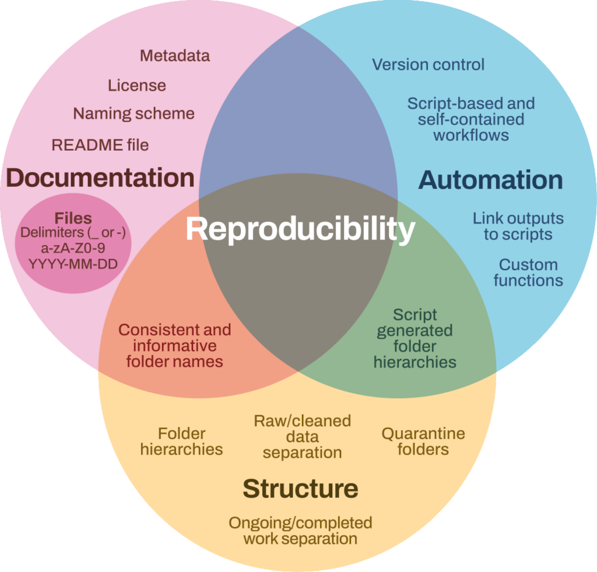

7 Publishing and archiving
In many areas of research, academic papers form only a part of scholarly output, and they frequently do not contain enough information for reproducibility and detailed discourse. A more complete description of the research requires the publication of custom-written code, details on all software used (such as version information) and supporting data files.
In this section, we propose methods of code and data publication that are suitable for inclusion in the permanent scholarly record. This section also stresses that software should be cited on the same basis as other research outputs and accorded the same importance in the scholarly record as citations of other research products, providing scholarly credit and normative, legal attribution to all contributors to the software.
7.1 Publishing research software
To work towards satisfying the FAIR principles (see Chapter 1), we recommend the use of research data repositories such as Zenodo, Dryad or Figshare when publishing code and data. These data repositories provide a persistent digital object identifier (DOI) and long-term preservation of research outputs. Zenodo, developed and maintained by the European Organization for Nuclear Research (CERN), is free of charge for most usage up to 50 GB and is available to researchers from all research fields. Figshare is a commercial option with a free usage tier up to 20 GB. Both Figshare and Zenodo provide the option to version DOIs for the research output, allowing you to further develop software and update your repositories over time in a manner that they stay clearly connected. If used in association with GitHub some information is automatically recorded. See Chapter 8 for links on how to do this. Many universities have institutional repositories that can also be used for code and data archiving or may require you to register your research outputs in other systems.
You can also publish your code or software packages (see CRAN for R and PyPI for Python) via software registries and software papers. See Chue Hong’s “Doing Science in the Digital Age (a personal journey as a data explorer)1 for an overview of software publication options with their advantages and disadvantages.
7.2 Licensing
A licence is an explicit statement that grants certain uses of a work. Therefore, it is critical to include a licence to allow people to reuse code when publishing it to an online repository. For text content(such as journal publications), Creative Commons licences are typically used. However, these are not suitable for research code, for which an open source license should be selected2. Guides on how to choose appropriate licenses for your work have been published by the Software Sustainability Institute and The Turing Way. It is important to license your work in a manner that is also machine readable, making licensing less ambiguous3.
Attaching a license to your work is straightforward. Once you have chosen the licence you wish to use, add a text file called LICENSE or LICENSE.txt to your project that contains the license text. The website choosealicense.com contains simplified information about available licenses along with the full license text for you to copy and paste into your LICENSE or LICENSE.txt file. When using GitHub, you can also start with adding a LICENSE file to your repository, which will pop up the license templates that you can use. We recommend that you use an existing license, rather than writing a custom license, as this prevents confusion about reuse. You should also check whether your organisation has a policy on publishing software and recommended licenses that you should use, as well as guidance on how to include information about the copyright holder.
7.3 README
A README file provides information about the software and is intended to help ensure that the software can be correctly interpreted and used, by yourself or others. A README file is generally the landing page of your software repository. See Make a README for more information.
7.4 Citation
A software citation ideally contains the following information4:
Example Software Citation (APA): Developer, A. A., Developer, B. B., & Developer, C. C. (yyyy) 1. Title of the software: Subtitle (Version #.#) 2. [Computer software] 3. Publisher 4. https://URL
The CFFinit tool can be used to create a CITATION.cff5. See Chapter 8 for this chapter for more information about using this tool. Citing the underlying code of a publication within the publication itself improves the visibility of research outputs. It is also important to cite any other software that you reused. References to the research software you created or reused should also be included in the Data/Code Availability Statement6 in the research article.
7.5 Putting the FAIR principles into action
Get a DOI.
Share your software via a data repository or software paper.
Ensure that others can understand and execute your code.
Include sufficient metadata and documentation of the code, as well as a
READMEfile that introduces and explains the project. This includes information about how to use the code, its dependencies and citations of software you reused. Save the code in a format that can be opened by any text editor or IDE, such as.txt.Add a
LICENCEto enable possible reuse.In the code repository, include a
LICENSEfile that outlines the reuse requirements.Add a
CITATIONfile to ensure credit, visibility and findability of your work.In the code repository, include a
CITATION.cfffile that outlines how the code should be cited.Linking your research outputs.
Cite the software in your research article (in citations and data/code availability statement) and refer to your research article in the code repository (for example, via your
READMEfile). Check all the references to related research outputs so all outputs are linked and findable.
For examples of how FAIR principles apply to code see Chapter 4.

Chue Hong, N. (2021). Doing Science in the Digital Age (a personal journey as a data explorer). Figshare. Presentation. https://doi.org/10.6084/m9.figshare.17094365.v1↩︎
https://opensource.org/docs/osd accessed 15th August 2025↩︎
https://reuse.software accessed 15th August 2025↩︎
Katz D. S, et al. (2021). Recognizing the value of software: a software citation guide [version 2; peer review: 2 approved]. F1000Research, 9:1257. https://doi.org/10.12688/f1000research.26932.2↩︎
https://citation-file-format.github.io/cff-initializer-javascript accessed 15th August 2025↩︎
https://book.the-turing-way.org/communication/citable/citable-cite#cm-citable-cite-data accessed 15th August 2025↩︎